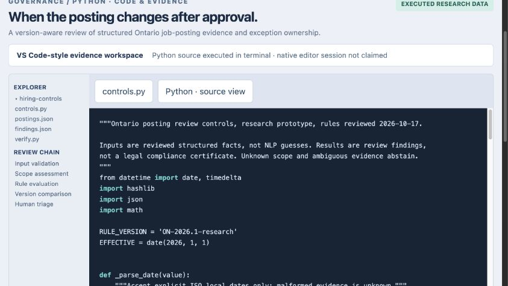

When the posting changes after approval · Manvir Singh Judge · An end-to-end visual walkthrough
03 / Trace the result to executable logic
The code workspace displays the actual Python control source. The processing chain validates inputs, assesses scope, evaluates rules, compares versions and routes uncertainty to a reviewer. Native VS Code/Tableau execution is not claimed; the Python verification runs locally.

Download image